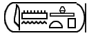

Updated 03-Mar-2019 • tags apps, pickers, egyptian
This Unicode character picker allows you to produce or analyse runs of Egyptian hieroglyphic text. Character pickers are especially useful for people who don't know a script well, as characters are displayed in ways that aid identification.
There are a number of unusual features in this picker. They are described below.
If something is broken or missing raise an issue. For version information see the Github commit list.
Includes all the characters in the Unicode Egyptian hieroglyphs and Egyptian hieroglyph format controls blocks.
This picker has a number of special features that are different from other pickers, and which are described here.
Keyword search. The picker associates most hieroglyphs with keywords that describe the glyph. These are based on the descriptions in lists by Gardiner and James P. Allen.
The input field Search for allows you to search for characters by keyword. As you type, matching characters appear. Click on those characters to add them to the main text area.
Searching for ripple will match both ripple and ripples. Searching for king will match king and walking. If you want to only match whole words, surround the search term with colons, ie. :ripple: or :king:.
Note that the keywords are written in British English, so you need to look for sceptre rather than scepter.
Keywords can be entered in any order. Results will be for characters that have all the space-separated keywords present in the database.
If you want two or more words to be searched for as a single unit, replace the intervening spaces with + signs. Note that this reduces the ability to find words in any order, eg. vulture egyptian will not return the same results as vulture+egyptian.
Each space-separated item of search input is treated as a regular expression, so if you want to search for two words that may have other words between them, use .*. For example, ox .* palm will match ox horns with stripped palm branch. You can search for the union of two or more items by separating words by |, eg. king|queen will search for characters with descriptions containing either king or queen.
(Note: to search for a character based on the Unicode name for that character, eg. w004, use the search box in the yellow area below.)
Category-based input. Click on one of the orange characters, chosen as nominal representatives of Gardiner's standard categories, to show below all the characters in that category. Click on one of the hieroglyphs that appear to add it to the main text area.
As you mouse over the orange characters, you’ll see the name of the category appear just below the text area.
Format controls. The picker comes with 2 webfonts. The default is Noto Sans Egyptian Hieroglyphs, and the second is Aaron UMdC Phonetic Alpha. The former doesn't contain glyphs for the new format controls, but the latter does. If you download and install the Aaron font, the font fallback feature of the browser should show glyphs for the format controls, whichever font you use.
I don't know of an available font at the moment that actually uses the format controls to rearrange the Unicode characters.
Text direction. The characters → ↔ ←︎︎︎ (just below the right side of the text area) allow you to set the base direction of the text area to LTR, auto, and RTL, respectively. The symbol ⇐︎ sets the direction to RTL override.
Particularly useful for Egyptian hieroglyphs is the symbol ⭅︎ . This mirrors the character glyphs at the same time as applying a RTL override. This allows you to display text from right to left. It doesn't change the order of the underlying characters in the text, nor does it require you to type any differently than normal.
Character names. As you mouse over characters in the selection areas of the picker, you will see the code point and character name appear here. Also, keywords are appended to the character names, where they exist. For example:
U+1314E: EGYPTIAN HIEROGLYPH G012 (falcon archaic image flail flagellum)
In this picker you will also see the category as you mouse over the orange category selectors, which makes it much easier to find a given category, eg.:
A. Man and his occupations ( man seated )
Sources. The main source for keywords and consonant mappings so far has been Gardiner's 1957 List of Hieroglyphic Signs, and Middle Egyptian by James P Allen (here).
A key source for the manuel de codage was http://www.catchpenny.org/codage/.
Another useful site is http://aoineko.free.fr/index.php?lang=en, which composes two-dimensional hieroglyphic runs from the manuel de codage syntax.
MdC to WikiHiero. Displays the highlighted MdC (ASCII) string as hieroglyphs in 2-dimensional arrangements just below the text area. For example, <-i-mn:n-R4:t*p-> becomes:

The code for this section was derived from the WikiHiero pages at http://aoineko.free.fr/. The logic and graphics were developed by Guillaume Blanchard (Aoineko), S. Rosmorduc, G. Watson, and J. Hirst.
Images are currently used to represent characters, in order to achieve the correct placement. At some point in the future, font designs with appropriate positioning rules and a few new Unicode characters should allow for this positioning to be achieved easily using fonts and the new format controls.
MDC to Unicode. Converts text written in the Manuel de Codage style into Unicode hieroglyphs.
You can do this for a single MdC code, or for a string of them. For example, add the following to the text area:
z:A1*Z1-p-Z7-wn:n-i-n:p*Z7-E15-x:D43-Z7-Y1:n-A1-r:n-f
Then click on this control and the following converted string will appear in the secondary text area.
𓊃𓀀𓏤𓊪𓏲𓃹𓈖𓇋𓈖𓊪𓏲𓃢𓐍𓂤𓏲𓏛𓈖𓀀𓂋𓈖𓆑
From there you can replace the original text or add to it, or copy-paste the result elsewhere.
Unicode to MdC. Does the opposite to that of the previous control, converting text written in Unicode characters into the Manuel de Codage style. Try the example above in reverse.
When converting in this direction, because one hieroglyph may map to alternative MdC strings, you may need to select from the alternatives offered by the control (shown in a yellow box). Simply click on the alternative you want when they are displayed by the picker.
Phonetic look up. Many of the hieroglyphs are associated with 1-, 2- or 3-consonant pronunciations. Many such pronunciations are stored in the database behind the picker. If you know the pronunciation, you can look for corresponding hieroglyphs as follows. (Note that this lookup is far from exhaustive!)
Type the sequence of consonants using Unicode characters (not McD equivalents) into the text area and highlight them. Then click on Phonetic look up. Hieroglyphs that match that character or sequence of characters will be displayed below the text area, and can be added to the text area by clicking on them. (Note that if you still have the search string highlighted in the text area those characters will be replaced by the hieroglyph.)
You will find the panel Latin characters useful for typing characters that are not accessible via your keyboard. The panel is displayed by clicking on the higher L in the grey bar to the left. Click on a character to add it to the text area.
For example, if you want to obtain the hieroglyph 𓎝, which is represented by the 3-character sequence wꜣḥ, add wꜣḥ to the text area and select it. Then click on Latin characters. You will see the character you need just above the SPACE button. Click on that hieroglyph and it will replace the wꜣḥ text in the text area. (Unhighlight the text in the text area if you want to keep both and add the hierglyph at the cursor position.)
Latin to Egyptian. Displays a panel of Latin characters used for transcription, but when you click on them they insert hieroglyphs into the text area. These are 26 hieroglyphs represented by a single consonant. Think of it as a shortcut if you want to find 1-consonant hieroglyphs by pronunciation.
Egyptian alphabet. Displays a panel with the 26 hieroglyphs that the previous panel produces. In many cases this is a quicker way of typing in these hieroglyphs.